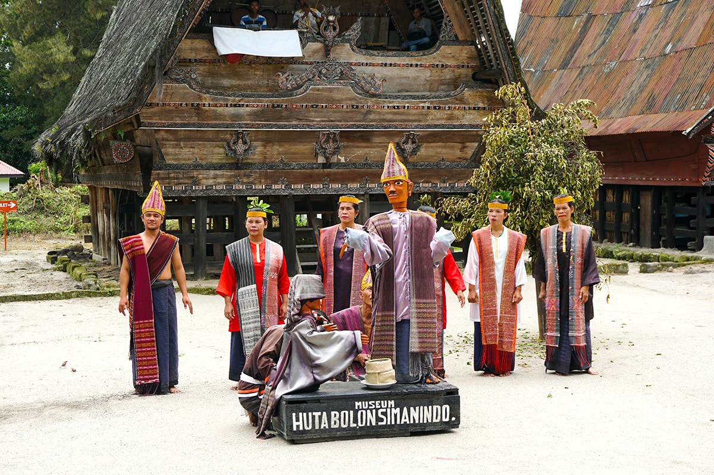
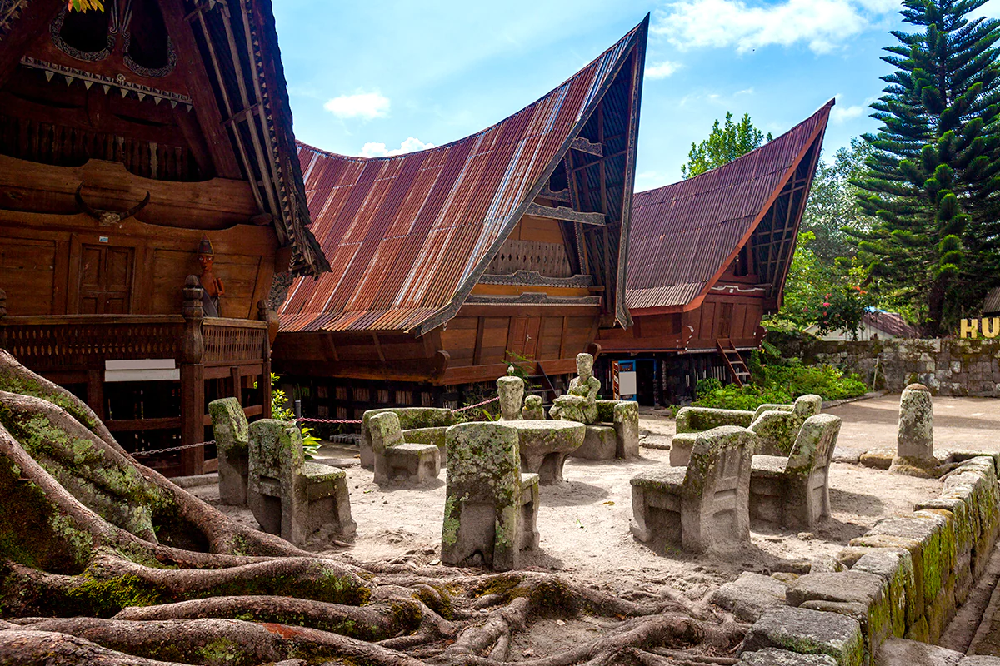

Danau Toba adalah sebuah keajaiban alam yang sangat menakjubkan. Danau ini diperkirakan terbentuk dari letusan dahsyat sebuah gunung api, Gunung Toba, yang terjadi sekitar 74.000 tahun yang lalu. Dengan luas lebih dari 1.145 kilometer persegi dan kedalaman 450 meter, Danau Toba sebenarnya lebih mirip lautan daripada danau. Di tengah danau vulkanik terbesar di dunia ini juga terdapat sebuah pulau yang berukuran cukup besar, yaitu Pulau Samosir.
Danau Toba menjadi tempat yang sempurna untuk bersantai, karena udaranya sangat sejuk dan suasananya pun amat tenang. Tentu saja, sebab letak Danau Toba berada di 900 meter di atas permukaan laut. Selain panorama danau yang memukau, Sobat Pesona juga akan disuguhkan keindahan pemandangan deretan pegunungan dan pepohonan hijau yang menyegarkan mata. Pokoknya, cocok jadi tempat untuk melepas penat, deh!
Jika Sobat Pesona berencana untuk ke Danau Toba menggunakan transportasi udara, terdapat dua jalur yang bisa dipilih. Pilihan pertama, dari Bandara Internasional Kualanamu, Medan, Sobat Pesona bisa naik pesawat menuju Bandara Internasional Sisingamangaraja XII yang terletak di Siborongborong, Tapanuli Utara. Kemudian, dari bandara ini, Sobat Pesona bisa meneruskan perjalanan ke Danau Toba menggunakan jalur darat.
Pilihan kedua, Sobat Pesona bisa langsung memilih penerbangan ke Bandara Internasional Sisingamangaraja XII dari Jakarta atau dari beberapa kota besar lainnya. Cek dulu ketersediaan maskapai penerbangan dari daerahmu ya, Sobat Pesona!
Nah, jika Sobat Pesona menggunakan jalur darat dari Medan, Sobat Pesona bisa menggunakan bus jurusan Medan-Parapat yang bisa ditempuh dalam waktu kurang lebih 4 jam. Namun, bila ingin melakukan perjalanan yang lebih pribadi dan santai, tersedia pula agen-agen perjalanan di kota Medan yang bisa membantu Sobat Pesona untuk mengatur penyewaan mobil dan supir ke Danau Toba.
Sobat Pesona juga bisa melanjutkan perjalanan dari Danau Toba ke Pulau Samosir. Pilihannya adalah naik kapal feri yang dijadwalkan berangkat setiap satu jam sekali di Pelabuhan Ajibata menuju Pelabuhan Tomok. Atau, Sobat Pesona juga bisa berangkat dari Pelabuhan Muara ke Pelabuhan Sipinggan yang jadwal keberangkatan kapalnya hanya dua kali sehari, yaitu jam 06.30 WIB dan 15.00 WIB. Jadwal ini dapat berubah sewaktu-waktu, pastikan Sobat Pesona selalu mencari info terbaru, ya!
